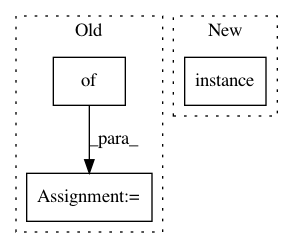

1305be0d02296ddbf12a67b9ba4b542587e285de,nilmtk/disaggregate/combinatorial_optimisation.py,CombinatorialOptimisation,disaggregate,#CombinatorialOptimisation#Any#Any#,62
Before Change
training_metadata = model["training_metadata"]
if (isinstance(training_metadata, tuple) and
len(training_metadata) == 2):
appliance = {
"meters": [i+2],
"type": training_metadata[0],
"instance": training_metadata[1]
}
appliances.append(appliance)
else:
for app in training_metadata.appliances:
appliance = {
After Change
appliances.append(appliance)
elec_meters.update({
meter.instance(): {
"device_model": "CO",
"submeter_of": 1,
"data_location": ("{}/elec/meter{:d}"
In pattern: SUPERPATTERN
Frequency: 3
Non-data size: 3
Instances
Project Name: nilmtk/nilmtk
Commit Name: 1305be0d02296ddbf12a67b9ba4b542587e285de
Time: 2014-11-16
Author: jack-list@xlk.org.uk
File Name: nilmtk/disaggregate/combinatorial_optimisation.py
Class Name: CombinatorialOptimisation
Method Name: disaggregate
Project Name: nilmtk/nilmtk
Commit Name: b523b464d8cafe29e352981c1c6df941f205592a
Time: 2014-07-09
Author: jack-list@xlk.org.uk
File Name: nilmtk/metrics.py
Class Name:
Method Name: mean_normalized_error_power
Project Name: nilmtk/nilmtk
Commit Name: 7d5c595768fb372606290277996ec63c5489aa11
Time: 2014-12-19
Author: jack-list@xlk.org.uk
File Name: nilmtk/metergroup.py
Class Name: MeterGroup
Method Name: draw_wiring_graph